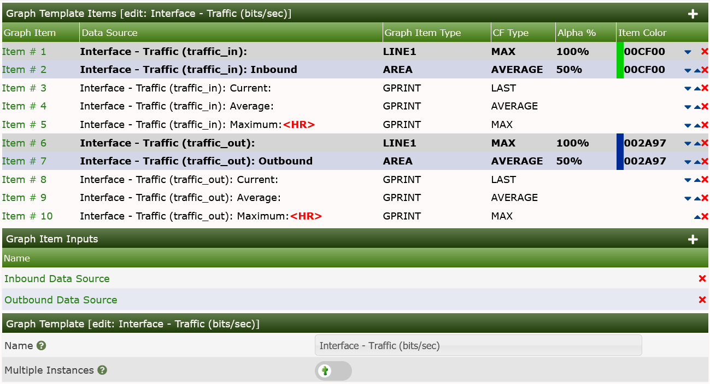
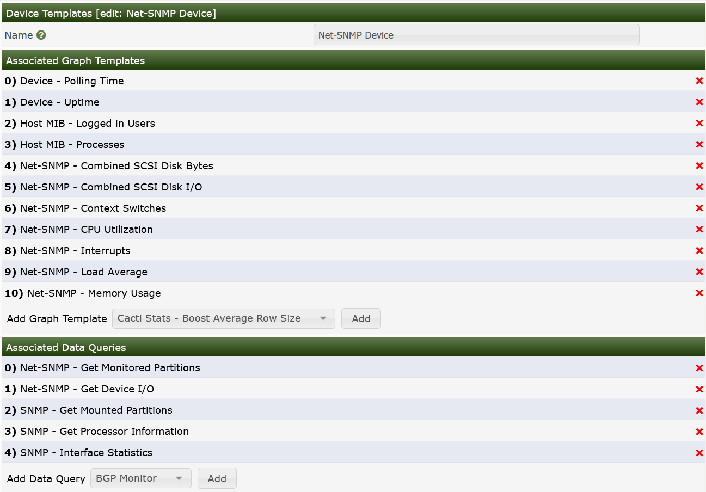
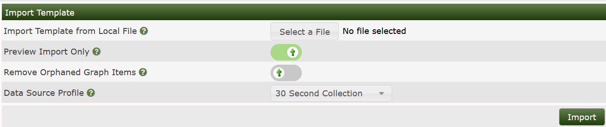

The real strength of Cacti is unleashed by using templates. There are five different types of templates with the basic Cacti installation:
Device Templates - Define a Collection of Graph Templates and Data Queries that belong to a class of Devices
Graph Templates - Define how to paint the Graph, it size, legend, left and right Axis and it Canvas
Data Templates - Define how data is to be stored in the RRDfile and how often to collect that data
Aggregate Templates - A special class of Graph Template that allows you to combine elements from multiple Graph of a common Template into one Graph
Color Templates - A collection of color rotations to use for Aggregate Graphs
While it is perfectly fine to define all Data Sources and Graphs without using Templates at all, the burden of this approach is high.
In most installations, there are hundreds if not thousands of Devices of the same kind. And there are many similar Graph Templates, that span multiple Device Templates. For example: Network Traffic information is needed for almost every Device. Therefore, the parameters needed to create a traffic RRDfile are defined by the Data Template, in this case known as "Interface - Traffic". These definitions are used by all Traffic-related RRDfiles.
The same approach is used for defining Graph Templates. This is done only once. And all parameters defined within such a Graph Template are copied to all Graphs that are created using this Template.
The last type of classic Templates are the Device Templates. The purpose of Device Templates is to group all Graph Templates and Data Queries for a given Device Type. Example Device Types that you might find a Device Template for include:
So you will make up a Device Template e.g. for a specific type of router, switch, host and the like. By assigning the correct Device Template to each new Device, you'll never forget to create all needed Graphs.
There's no need to create all Templates on your own! Apart from the fact, that many common templates are provided out-of-the-box, there's a very simple mechanism to Import Templates and to Export Templates and more recently to Import Packages.
More recent additions to the Cacti family of Templates are the Aggregate Template and Color Template. The Aggregate Template allows you to define a Graph Template that can aggregate data from many Graphs sharing that Template.
The Color Template defines a list of colors that are used in a Round Robin fashion to change the colors seen on the resulting Aggregate Graphs to better assist the user in interpreting the resulting Graph.
In order to best follow the natural course of Template creation, the remainder of this chapter will explain Templating starting with Data Templates, then we will go from there to Graph Templates, and from there go to a walk-through of creating both a Data Template and Graph Template.
From there, we will explain how to create a Graph using that newly created set of Templates.
In Cacti, a Data Template provides a skeleton for an actual Data Source. If you have many Data Sources that share most of their characteristics, using a Data Template would probably make sense. No change of a Data Template is propagated to already existing RRDfiles. But most of them may be changed by using rrdtool tune from command line. Pay attention to not append new Data Source Items to already existing RRDfiles. There's no rrdtool command to achieve this!
To create a new Data Template, select Data Source under Console > Templates menu selection and then click Add, which in most cases will be the plus sign in the upper right area of the page.
The first thing you must do is give the template a name. This name has nothing to do with the Data Source name, but is what you will use to identify the template throughout Cacti.
Second, you will notice a list of Data Source / Data Source Item field names with Use Per-Data Source Value check-boxes next to each one. The nice thing about Templates in Cacti is that you can choose whether to template each field on a per-field basis. If you leave the check-box unchecked, every Data Source attached to the Data Template will inherit its value from the Template. If the check-box is checked, every Data Source attached to the Data Template will contain its own value for that particular field. When generating a real Data Source, you will be prompted to fill those non-templated fields.
NOTE: If you are using Cacti's Automation feature, there is presently no way for you to override these values. So, plan accordingly when engineering your Cacti deployment.
| Name | Description |
|---|---|
| Name | The name of the Data Source that will be created by using this Template. You can use the keyword host_description enclosed by vertical bars in this field, which will be automatically substituted with the current host description of the Device. There are several replacement values available to you when using a Template. |
| Data Input Method | Here is where you tell Cacti how it is supposed to fetch data for this Data Source. There are several Data Input Methods that come with Cacti, and you can add your own by going to Console > Data Collection > Data Input Methods. If this RRDfile is being populated outside of Cacti, make sure to leave this field set to "None". |
| Data Source Profile | The Data Source Profile will define how often to collect data for the resulting Data Source, and how long to keep that data in the RRDfile. |
| Data Source Active | This is a quick and easy to tell Cacti to stop gathering data for this Data Template. The resulting Data Source can still be used on Graphs, but no data will be fed to it until it is made active again. |
NOTE: For most Data Templates, you will should not have to to check the Use Per-Graph Value check-box for the name field. The Templating should handle this just fine. However, the Generic SNMP OID Data Template has this value checked to allow you to create Graphs and Data Sources on a piecemeal basis.
When you are finished filling in values for the Data Template, click Create and you will be presented with a screen similar to the image below.
Just like a Graph, a Data Source can have more than one item. This is useful in situations where a script returns more than piece of data at one time and both need to appear on the same Graph. This also applies to Data Queries, so you can have a single Data Template that contains both Inbound and Outbound Traffic, rather than having to create a separate Data Template for each.
| Name | Description |
|---|---|
| Internal Data Source Name | This is the name used by RRDtool to identify this particular data source within the RRDfile. RRDtool places a limit of 19 alphanumeric characters (plus '_' and '-') on this field. |
| Minimum Value | Here is where you specify the minimum value that is expected for this data source in the RRDfile. If a value lower than the minimum is given, it will be stored as Unknown (U). |
| Maximum Value | Here is where you specify the maximum value that is expected for this data source in the RRDfile. If a value higher than the maximum is given, it will be stored as Unknown (U). Note: It often makes sense to define a reasonable maximum value here to avoid spikes in case of a COUNTER wrap |
| Data Source Type | Cacti currently supports seven types of data that RRDtool can represent for any given data source: COUNTER: is for continuous incrementing counters like the ifInOctets counter in a router. The COUNTER data source assumes that the counter never decreases, except when a counter overflows. It is always a whole INTEGER, floating point numbers are invalid. The update function takes the overflow into account. The counter is stored as a per-second rate. When the counter overflows, RRDtool checks if the overflow happened at the 32-bit or 64-bit border and acts accordingly by adding an appropriate value to the result. GAUGE: numbers that are not continuously incrementing, e.g. a temperature reading. Floating point numbers are accepted. ABSOLUTE: counters that are reset upon reading. DERIVE: like COUNTER but without overflow checks |
| Heartbeat | As defined by RRDtool: "The maximum amount of time that can pass before data is entered as "unknown". This field is usually '600' or 2 data gathering intervals". |
Assuming you selected a Data Input Method on the previous screen, you should now be presented with a Custom Data form. It will show a single line for every single parameter required for that very Data Input Method. This is how the Data Source connects to the Data Input Method to provide all run time parameters.
Each Custom Data field is per-field Templatable as all of the other Data Source fields are. Even if you select the Use Per-Data Source Value check-box, it might be useful to specify a value that will be used as an "initial value" for any Data Source using the Data template.
NOTE: When changing parameters of a Data Template, existing RRDfiles will not be changed automatically. If this is required, you will have to apply
rrdtool tunecommand to any related RRDfile manually.
Applying a Data Template to a Data Source is a very simple process. The first thing you must do is select the Data Source you want to apply the template to under Data Sources. Under the Data Template Actions drop-down, select the Data Template that you want to apply to the Data Source and click Save. Though this should be very rare in modern Cacti instances, it was fairly common before Cacti's Templating system matured.
Once a Template is applied to a Data Source, you will notice that you can only change values for the fields that you checked Use Per-Data Source Value for.
NOTE: Now any time a change is made to the Data Template, it will be automatically propagated to the Data Sources attached to it. However, as previously stated, changes to a Data Template that involve changes to the Data Source Items, will not be automatically applied to those same Data Sources.
If you goto the following article How to Work with Templates. There you will find a step by step guide on how to work with variout Cacti Templates in general.
In Cacti, a Graph Template provides a skeleton for an actual Graph. If you have many Graphs that share most of their characteristics, using a Graph Template makes perfect sense. After a Graph is attached to a particular Graph Template, all changes made to the Graph Template will propagate out to all of its Graphs, unless Use Per-Graph Value has been checked.
To create a new Graph Template, select Graph under Console > Templates menu selection, then click Add normally the plus sign in the upper right corner of the Graph Template interface.
The first thing you must do is give the Graph Template a name. This name has nothing to do with the graph title, but is what you will use to identify the Graph Template throughout Cacti. Second, you will notice a list of graph field names with Use Per-Graph Value check-boxes next to each one. The nice thing about Templates in Cacti is that you can choose whether to template each field on a per-field basis. If you leave the check-box unchecked, every Graph owned by the Graph Template will inherit its value from the Template. If the check-box is checked, every Graph owned by Graph Template will have its own value for that particular field.
| Name | Description |
|---|---|
| Title | The title of the Graph within Cacti and the title that will be printed on the actual Graph itself. NOTE: You can use the keyword host_description enclosed by vertical bars in this field, which will be automatically substituted with the current host description. |
| Image Format | Choose whether you would prefer to output your graph images in PNG or SVG. |
| Height | The height of the Graph Canvas in pixels. This is not the height of the overall Graph, just the Graph Canvas. |
| Width | The width of the Graph Canvas in pixels |
| Base Value | Should be set to 1024 for memory values and 1000 for traffic measurements. |
| Slope Mode | RRDtool graphs are composed of stair case curves by default. This is in line with the way RRDtool calculates its data. Some people favor a more "organic" look for their graphs. |
| Auto Scale | Enable auto scale for the graph. This option must be check to use the next two options. Upper/Lower limit values are ignored when using auto-scale since these boundaries are determined automatically. |
| Auto Scale Options | Choose whether you would like to use --alt-autoscale (ignoring given limits), --alt-autoscale-max (accepting a lower limit), --alt-autoscale-min (accepting an upper limit. |
| Logarithmic Scaling | Choose if you want logarithmic y-axis scaling. |
| Scientific Units for Logarithmic Scaling | For linear graphs, scientific units (in magnitudes of k=kilo, M=mega, ...) is default. But for logarithmic graphs, exponential notation is default. Choose if you want logarithmic y-axis scaling and scientific units. |
| Rigid Boundaries Mode | From the RRDtool manual "Normally rrdgraph will automatically expand the lower and upper limit if the graph contains a value outside the valid range. With this option you can disable this behavior". |
| Auto Padding | If you have ever created RRDtool based graphs manually, you may have realized how annoying it can be to get text to line up properly. With this option Cacti will do its best to make the columns on your graph legend line up. This option works best when your graph legend has a consistent number of columns. |
| Allow Graph Export | If you choose to use Cacti's static HTML/image export, you can choose whether you want each individual graph to be exported. |
| Upper Limit | The maximum value that will be displayed on the y-axis. This value is ignored is auto-scaling is turned on. |
| Lower Limit | The minimum value that will be displayed on the y-axis. This value is ignored is auto-scaling is turned on. |
| Base Value | Whether you want to base the y-axis labels on 1000 or 1024. This field will typically be set to 1024 for memory and 1000 for traffic measurements. |
| Unit Grid Value | Sets the unit value for the y-axis (--y-grid). You should probably keep the unit short as to keep it readable. |
| Unit Exponent Value | Sets the 10^e scaling of the y-axis. Valid values for this field are between -18 and 18. For example, you could use 3 to display everything in 'k' (kilo) or -6 to display everything in 'u' (micro). |
| Vertical Label | The text to print on the left edge of the graph. Usually is the units the data on the graph is measured in. |
Relative to Auto-scale Options, the RRDtool graph manual says:
Limits [-u|--upper-limit value] [-l|--lower-limit value] [-r|--rigid] By default the graph will be auto-scaling so that it will adjust the y-axis to the range of the data. You can change this behavior by explicitly setting the limits. The displayed y-axis will then range at least from lower-limit to upper-limit. Auto-scaling will still permit those boundaries to be stretched unless the rigid option is set.
[-A|--alt-autoscale] Sometimes the default algorithm for selecting the y-axis scale is not satisfactory. Normally the scale is selected from a predefined set of ranges and this fails miserably when you need to graph something like "260 + 0.001 * sin(x)". This option calculates the minimum and maximum y-axis from the actual minimum and maximum data values. Our example would display slightly less than "260-0.001" to slightly more than "260+0.001".
[-J|--alt-autoscale-min] Where "--alt-autoscale" will modify both the absolute maximum AND minimum values, this option will only affect the minimum value. The maximum value, if not defined on the command line, will be 0. This option can be useful when graphing router traffic when the WAN line uses compression, and thus the throughput may be higher than the WAN line speed.
[-M|--alt-autoscale-max] Where "--alt-autoscale" will modify both the absolute maximum AND minimum values, this option will only affect the maximum value. The minimum value, if not defined on the command line, will be 0. This option can be useful when graphing router traffic when the WAN line uses compression, and thus the throughput may be higher than the WAN line speed.
When you are finished filling in values for the Graph Template, click Create and you will be presented with a page similar to the image below. The example below is from a completed Traffic Graph Template.
In this first image, you can see what elements will be painted on the Graph Canvas. They are represented by LINEX, AREA and STACK elements. The Graph Items listed as GPRINT and COMMENT appear in the Legend Area of the Graph.
The Graph Input Items are the Cacti names for the Data Sources that appear on the Graph as well as other items that can be substituted during Graph Creation.
The Multiple Instances field is a parameter to let Cacti know that it should allow you to create more than one Graph per Device using the Graph Template.

The Common Options are options that most every Graph Template included. The Scaling Options are also very common, but related to Graph scaling only.

The Grid Options, Axis Options, and Legend Options are must less common but are available in Cacti should you choose to use them.

The first thing you should do is create Graph Items for a Graph Template, just like for a stand alone Graph. One difference you will notice is that the Data Sources drop-down will contain a list of Data Template items rather than Data Source Items. It is important that Cacti can make this association here, so that Cacti doesn't have to make unnecessary assumptions later.
| Name | Description |
|---|---|
| Data Source | If this graph item is to represent some sort of data, you must select a your data source here. Keep in mind that not all graph items have a data source. Graph item types such as COMMENT, VRULE, and HRULE typically do not. |
| Color | Depending on the graph item type, you can select a color for the graph item. This field only applies to the graph item types AREA, STACK, LINE1, LINE2, and LINE3. |
| Opacity/Alpha Channel | For a colored graph item, you may optionally select an opacity (alpha channel). This option is not available with RRDtool-1.0.x. |
| Graph Item Type | This field is important because it defines what kind of graph item this is. Types such as AREA, STACK, LINE1, LINE2, and LINE3 are used to represent data on the graph, while COMMENT and GPRINT are used put on the legend. The LEGEND type is specific to Cacti only and can be used if you want to Cacti to automatically create a GPRINT-LAST/GPRINT-AVERAGE/GPRINT-MAXIMUM graph item for you. Note: You must always put an AREA item before using STACK or your graph will not render. |
| Consolidation Function | This tells RRDtool which consolidation function to use when representing this data on the graph. You will typically use AVERAGE for most things on the graph area, and LAST/MAXIMUM as well for GPRINT items. |
| CDEF Function | If you want to apply a CDEF function to the graph item, select one here. Check out the CDEF section of the manual for more information. |
| Value | This field is only used with the HRULE/VRULE graph item types. Type any valid integer to draw the line at for HRULE or the time of the day HH:MM for VRULE. |
| GPRINT Type | If this item is a GPRINT, you can choose how you want the number to be formatted. You can add your own in the GPRINT Presets section of Cacti. |
| Text Format | You can enter text to be displayed on the legend here. This field is applicable for all graph item types except for the virtual LEGEND type. |
| Hard Return | Check this box to force graph items onto the next line. |
After creating Graph Items for your Graph Template, you will need to create some Graph Item Inputs. Graph Item Inputs are unique to Graph Templates because of the large number of items they sometimes contain. Graph Item Inputs enable you to take one Graph Item field, and associate it with multiple Graph Items. Graph Item Input fields are generally created automatically as you add Graph Items associated with a Data Source, like a LINE or AREA or GPRINT.
To create a new Graph Item Input manually, click Add on the right of the Graph Item Inputs form. There are various fields that must be filled in for every graph item input:
| Name | Description |
|---|---|
| Name | This will be the name used to identify the Graph Item Input on both the Graph Template and Graph edit pages. |
| Description | (Optional) This description will be displayed on the Graph edit page of any Graph using this Graph Template if specified. |
| Field Type | You must choose the field that you are going to associate with one or more Graph Item. |
| Associated Graph Items | Choose one or more Graph Items to associate with the field selected for "Field Type". When the user specifies a value for the field, it will be applied to all of the items you select here. |
Applying a Graph Template to an existing Graph is a very simple process, though very uncommon in a modern Cacti install. The first thing you must do is select the Graph you want to apply the template to under Graph Management. Under the Graph Template Action drop-down, select the Graph Template that you want to apply to the Graph and click Save. If this is a new Graph or the Graph and Graph Template contain an equal number of Graph Items, the Graph Template will be automatically applied. If number of Graph Items varies from the Graph to the target Graph Template, you will be prompted with a warning that your Graph will be changed, and not always for the better.
Once the Graph Template is applied to the existing Graph, you will notice that you can only change values for the fields that you checked Use Per-Graph Value for. You will also notice a new box, called Graph Item Inputs. This is where you can specify values for the Graph Item Inputs that you defined in the Graph Template. The values specified here will be applied to each Graph Item tied to the Graph Item Input.
NOTE: Any time a change is made to the Graph Template, it will be automatically propagated to the Graphs associated to it.
Device Templates in Cacti, often times referred to as Host Templates serve as a way to group a set of common Graph Templates and Data Queries to Devices of a certain class, say a Cisco Router or Linux host using Net-SNMP. It really accelerates the deployment of a Cacti system across and enterprise of Devices.
To create a new Device Template in Cacti, select the Device option under the Console > Templates menu selection. Once on that page, click Add on the right. Type a unique name for the Device Template and click the Create button. You will be redirected back to the edit page with the Associated Graph Templates and Associated Data Queries forms empty. These two forms allow you to associate Graph Templates and/or Data Queries with the Device Template. Simply select something from the drop-down menu and click Add to associate it with your Device Template.
In the case below, we show the Net-SNMP Device Template. Note the variety of Graph Templates and Data Queries available for this Class of Devices.

Assume, you're searching for a specific set of templates to monitor a special type of device. Apart from designing templates from scratch, there's a good chance to find a solution in the Scripts and Templates Forum. The set of templates is usually provided as a single XML file holding all required definitions for a data template and a graph template. Depending on the goal of the original author, he/she may have provided a Device Template as well as part of this XML file. Note that after you Import Templates, you may also have to copy a Resource XML file to the appropriate <path_cacti>/resource directory, and a script to the <path_cacti>/scripts directory. However, also note that in the current version of Cacti, Packages are now importable as well. When you import a Package all of the required additional file changes will also be accommodated. We will discuss Packages later in the documentation.

If the XML file was downloaded, simply select that file from the Downloads location on your local system. Cacti no longer supports pasting the XML into the browser window.
Please pay attention the the Data Source Profile field. By default, cacti will attempt to use your default Data Source Profile. However, you can change that at import time to use an alternate Data Source Profile or even the one from the Template itself, if it includes one.
Also, not that if you have made local modification to an earlier version of a Graph Template, and wish to fully migrate to the new Graph Template for all your existing Graphs, please select Remove Orphaned Graph Items. Otherwise, your Graphs will look awkward in the end. This should not be a problem for new Imports.
It's also important to Preview the Template imports to access the impact that the import will have on existing database object. In earlier versions of Cacti, you were unable to determine what would actually change. However, in the current and future versions of Cacti, you will be able to see all local modifications when performing a Preview prior to Importing.
In the image below, you can see the output of a Preview of the Cisco WLC 5520 Device Template. When Previewing, no changes are actually made to your Cacti system.
As mentioned previously, for a single OID based template, Importing the Template is all that will be required. However, for a script based template, the author will provide the script that has to be downloaded to the Cacti ./scripts directory and for a Data Query based Template, a second XML file holding the Data Query definitions will have to be downloaded to the appropriate directory under the ./resource directory.
When importing templates, Cacti will perform a version check. All XML templates hold the version of the Cacti system that generated this XML set. Cacti will import only, if your current Cacti version equals or is higher than the exported one.
Now that you know how to import, you may want to know in which way to export as well. Selecting the Export Templates gives
You may select to export a graph template, a data template, a Device Template or a Data Query. When selecting Include Dependencies, e.g. a Device Template will include all referred templates (Graph Template, Data Template, if defined, Data Query). Output may be written to the browser or to a file for uploading.
Copyright (c) 2004-2024 The Cacti Group